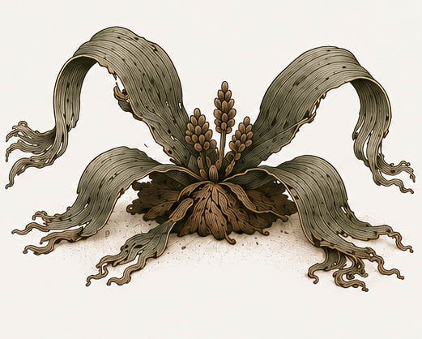
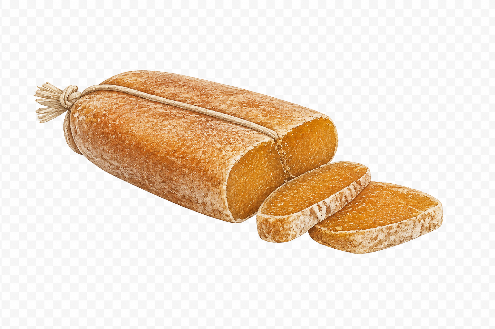
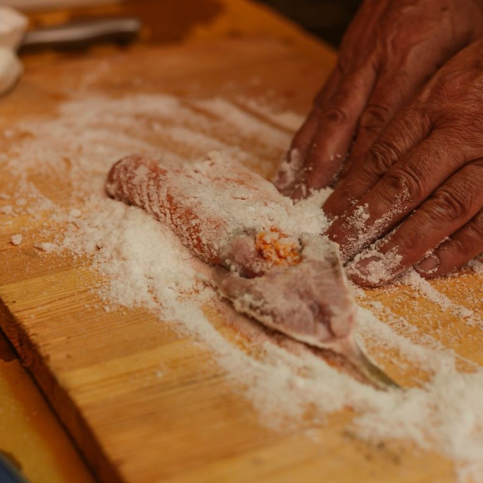
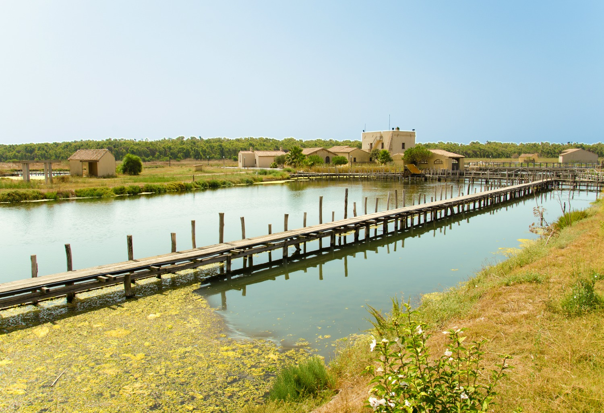

SPECIMEN 002Welwitschia
The plant that refuses to die.
View specimen →Salt-cured mullet roe. A Mediterranean delicacy shaped by sea, salt and centuries.

01
Bottarga is produced from the roe of grey mullet. Salted, pressed and slowly dried, it has been prepared for centuries throughout the Mediterranean.
Its unmistakable amber colour, elongated shape and intense flavour have made it one of Sardinia's most iconic culinary traditions.
Cabras Lagoon
Sardinia, Italy
A coastal lagoon shaped by salt water, reeds and seasonal winds. For generations, these waters have preserved one of the Mediterranean's oldest culinary traditions.
Mugil cephalus
Commonly known as the flathead grey mullet, this migratory fish inhabits coastal lagoons and estuaries throughout the Mediterranean, where its roe has long been prized for bottarga.
02
More than a delicacy, bottarga is the result of a preservation technique refined over generations. Salt, wind and time transform fresh roe into a product that can be stored, transported and enjoyed long after the fishing season has ended.

Fresh mullet roe is carefully covered with sea salt, pressed by hand and slowly matured before drying. This artisanal process has remained almost unchanged for generations.

Located on the western coast of Sardinia, the lagoon provides the ideal habitat for grey mullet and is considered the historical birthplace of Sardinian bottarga.
03
Bottarga is produced from the roe of grey mullet, carefully salted and dried.
The traditional production around Cabras Lagoon dates back centuries.
Its intense umami flavour means that only a few thin slices are needed to season an entire dish.
Mirabilia
Culinary Heritage
001
2026
"Every discovery begins with the simple question: What is this?"
END OF SPECIMEN 001
Curiosity rarely ends with a single answer. Every object opens the door to another story, another landscape, another forgotten wonder.